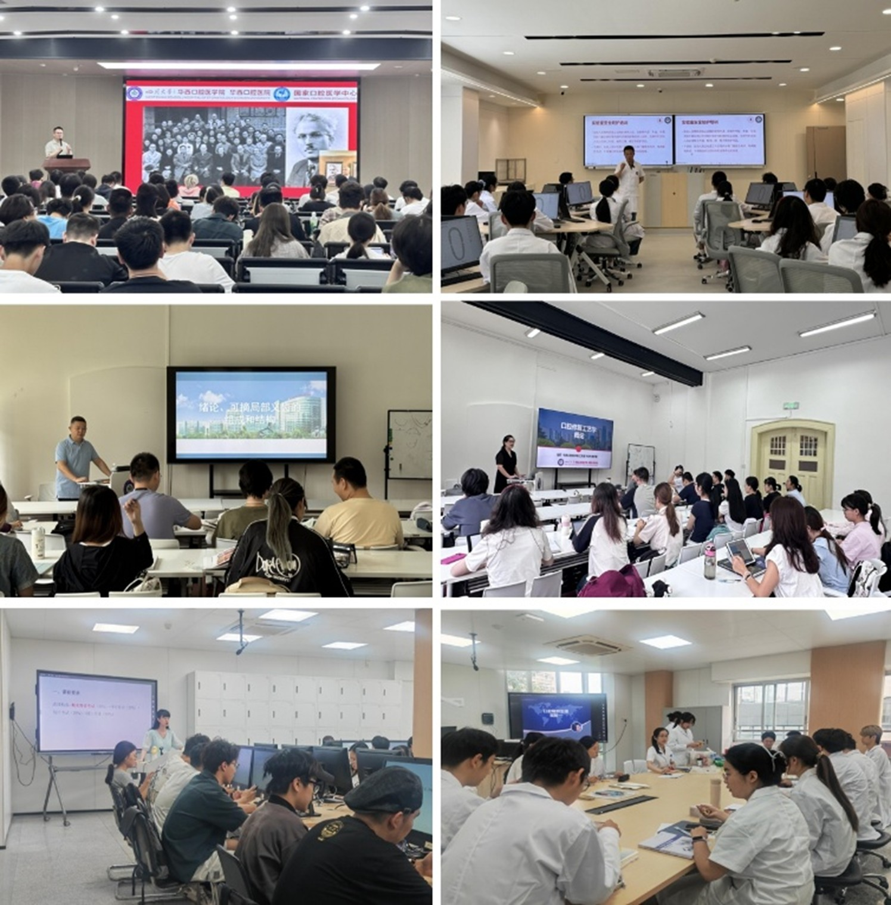

学院通知 · 教学通知
2025-2026学年秋季学期开学教学检查工作简报
发布时间：2016-5-18
为确保新学期教学工作顺利开展，学院在开学前对教学条件进行了全面检查与保障。重点对教室多媒体设备、教学实验室场地设施进行了系统调试与维护，确保所有教学设施运行正常，为新学期教学工作提供了有力支撑。 9月8-12日，学院院领导、院督导组、教务部、教学实验室、学工部等相关部门人员深入教学一线，开展了为期一周的开学教学检查工作。通过随机听课和实地查看，对教师到岗、课堂教学、学生到课、设备运行及整体教学秩序进行了全面细致的检查。 新学期教学开局平稳，整体秩序井然。各项教学设施运行正常，任课教师备课充分、按时到岗，学生到课情况良好、听课专注，课堂互动积极，展现了新学期师生良好的精神面貌和工作学习状态。
